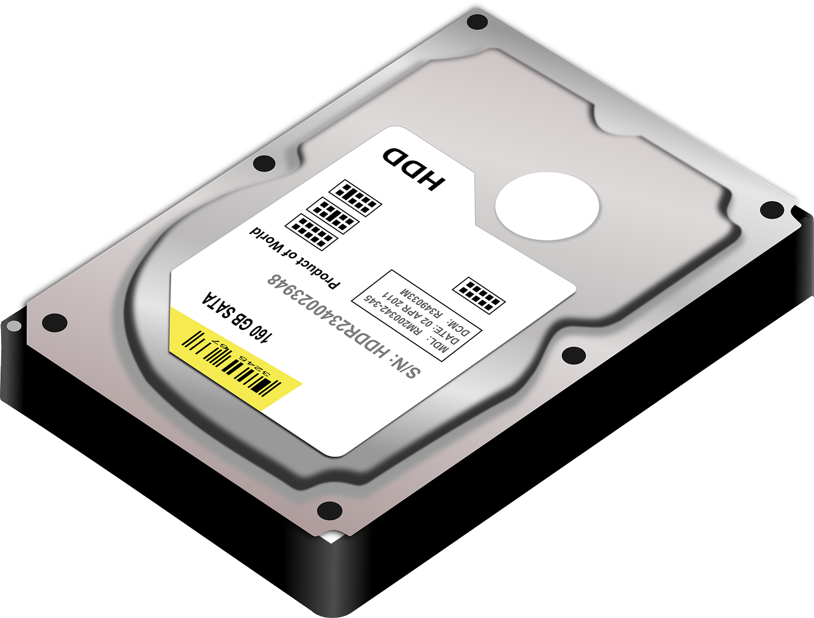

Funcionamiento del Disco Duro (HDD)
El Disco Duro (HDD) es un componente esencial en la infraestructura de almacenamiento de las computadoras modernas. Su papel central radica en proporcionar una capacidad de almacenamiento masiva y persistente para datos, programas y el sistema operativo.
Funciona mediante la utilización de tecnología magnética, donde discos metálicos recubiertos con material magnético giran a alta velocidad. Cabezales de lectura/escritura se desplazan sobre estos discos para acceder y almacenar datos de manera eficiente. Esta combinación de platos y cabezales permite una rápida lectura y escritura de información.
A nivel de software, el sistema operativo gestiona la disposición de datos en el disco duro a través de un sistema de archivos. La creación de particiones y sectores lógicos facilita la administración y recuperación efectiva de la información almacenada.

Funcionamiento Hardware:
- Platos Magnéticos: Discos metálicos recubiertos con material magnético.
- Cabezales de Lectura/Escritura: Brazos con cabezales que leen y escriben datos.
- Estructura en Capas: Varios platos dispuestos en capas para almacenar datos.
- Sectores y Pistas: Organización de datos en sectores y pistas.
- Motor y Actuador: Motor que hace girar los platos y un actuador para mover los cabezales.
- Conexiones y Controlador: Conexión a la placa madre a través de SATA o PATA, controlador interno.
Funcionamiento Software:
- Sistema de Archivos: Organización de datos por el sistema operativo en un sistema de archivos.
- Sectores Lógicos: Vista lógica del disco duro como una serie de sectores.
- Tabla de Particiones: División del disco en particiones gestionadas por una tabla.
- Gestión de Archivos: Controladores para la lectura, escritura y administración de archivos.
- Operaciones de E/S: Todas las operaciones de entrada/salida pasan por el sistema de archivos.